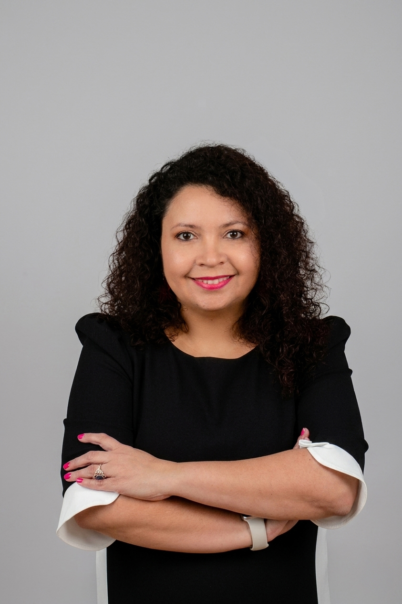

Hi, I am Lucy DeWeese
Today I am a graphic designer, photographer, and full-time mother of three children. My work is deeply rooted in connection and in the absolute beauty of families that come in many different shapes, backgrounds, and stories.
I find meaning in capturing the uniqueness of each person and each family in an honest and natural way. I focus on creating images that feel real, emotional, and timeless. My purpose is simply to capture moments of love and connection that people can hold onto forever.
My Story Through Time
1997 While in sixth grade, my love for photography began. I wanted to capture moments with my friends and the people I loved. I was always drawn to the people around me and the everyday moments that felt special even then. I often made sure I was in the photos too because I wanted to freeze those memories and keep them forever. Even at that young age, I understood how quickly moments pass and how photographs allow us to hold on to them.
As I grew older, that love for photography never faded. It stayed with me quietly, shaping the way I saw life and people. I also began photographing friends more intentionally, taking small sessions that helped me grow and develop my skills.
2017 My mother Deusa passed away in her 50s. That loss changed everything for me. Photographs became more than images. They became a way to hold on to love, memory, and connection when words were not enough.
2019 My daughter Luna Deusa was born. Her arrival brought light into my life and reminded me that even after deep loss, new life and joy can begin again.
In that same season, while photographing my daughter and studying at BYU–Idaho, I felt a strong prompting to invest more fully in photography. What had always been a personal passion slowly became a deeper calling.
As I continued my studies in Web Design and Development at BYU–Idaho, I also took many art and design courses that shaped my creative path. I worked with tools such as Adobe Illustrator, Photoshop, Lightroom, and InDesign, which strengthened my passion for visual storytelling and design.